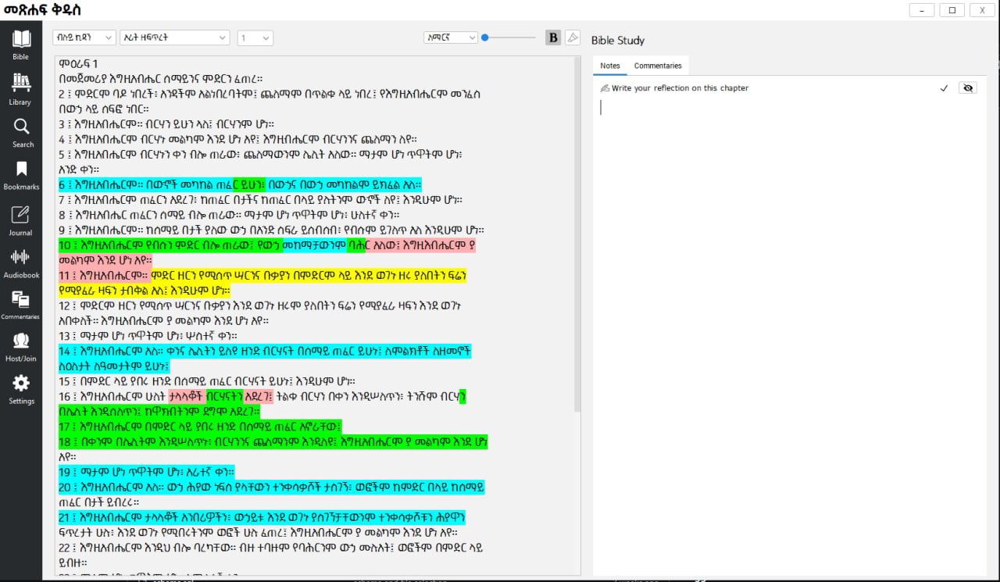
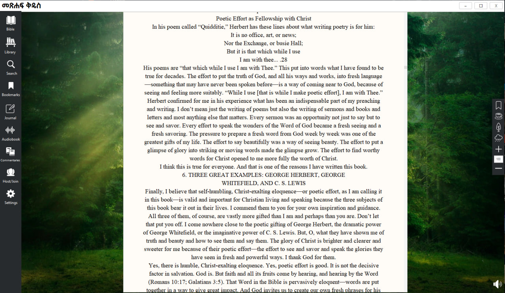
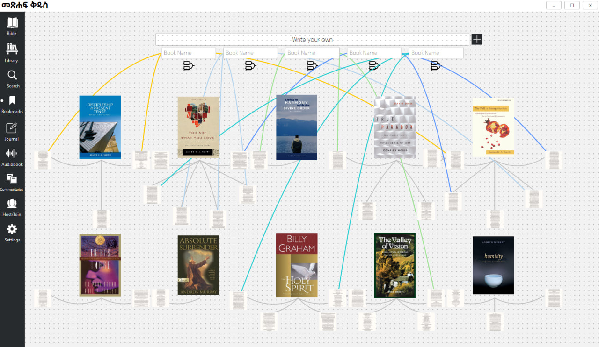
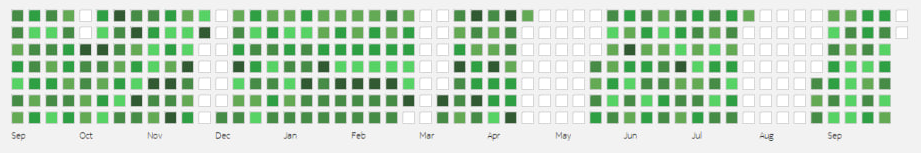

Experience the Scriptures in a new and immersive way with our Amharic Bible PC App — a feature-packed, open-source Bible study platform designed for depth, clarity, and community.
Our app includes the Amharic Bible and the English KJV (with more translations on the way), along with verse-by-verse commentaries for every book.




It also comes preloaded with 50+ spiritual books you can explore anytime. Enhance your study sessions with interactive reading ambiences and foley soundscapes, and stay motivated with a built-in reading streak tracker inspired by Git.

You can also write personal notes and reflections for every chapter — these appear whenever you revisit that chapter.
Upcoming features include Hebrew language support, audiobooks, and Bible study groups.